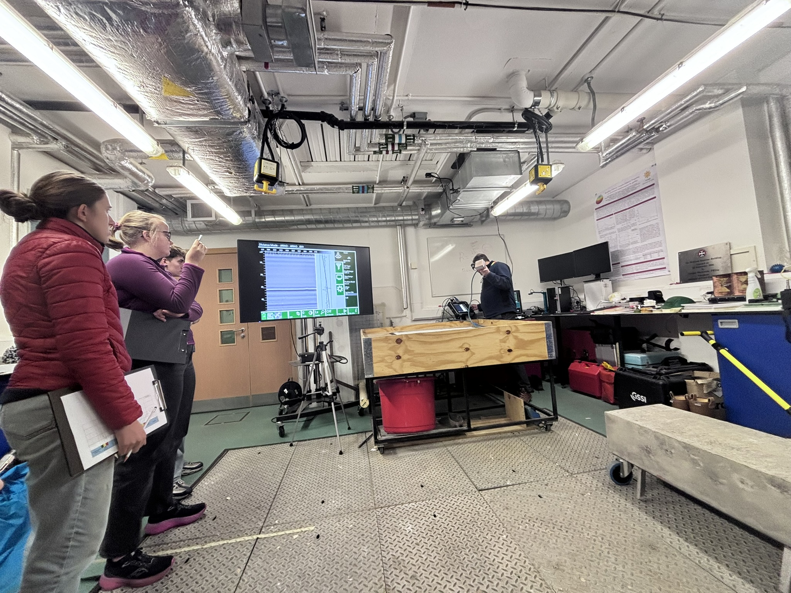
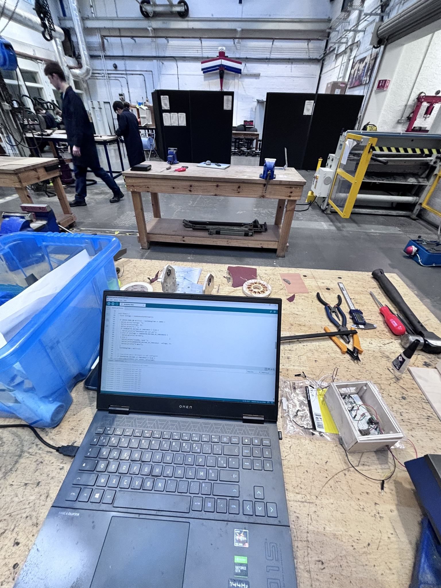
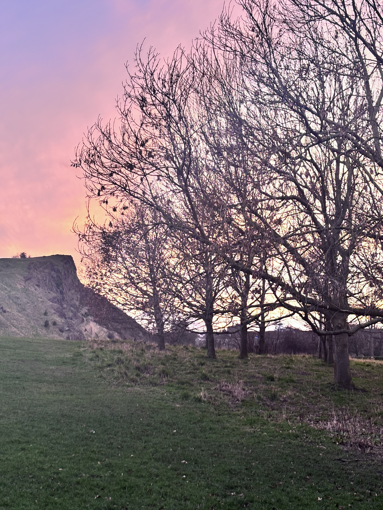
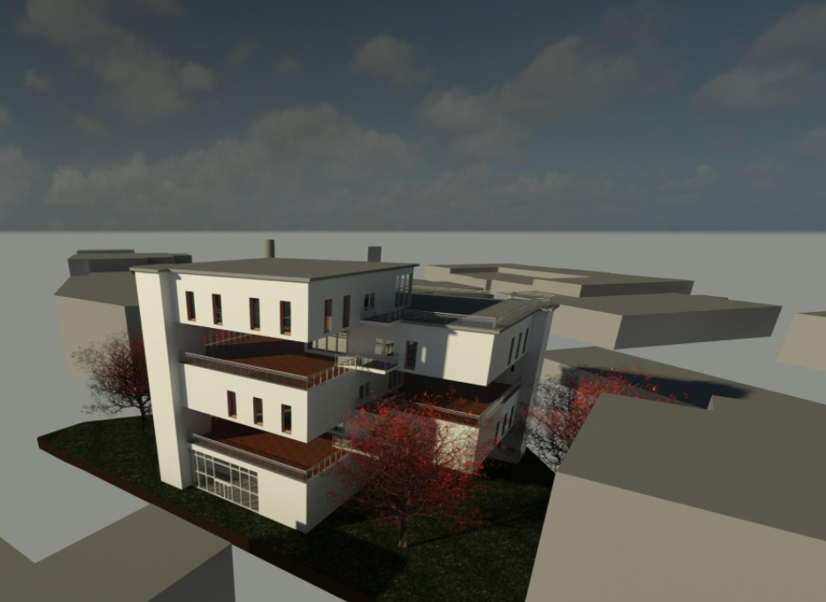
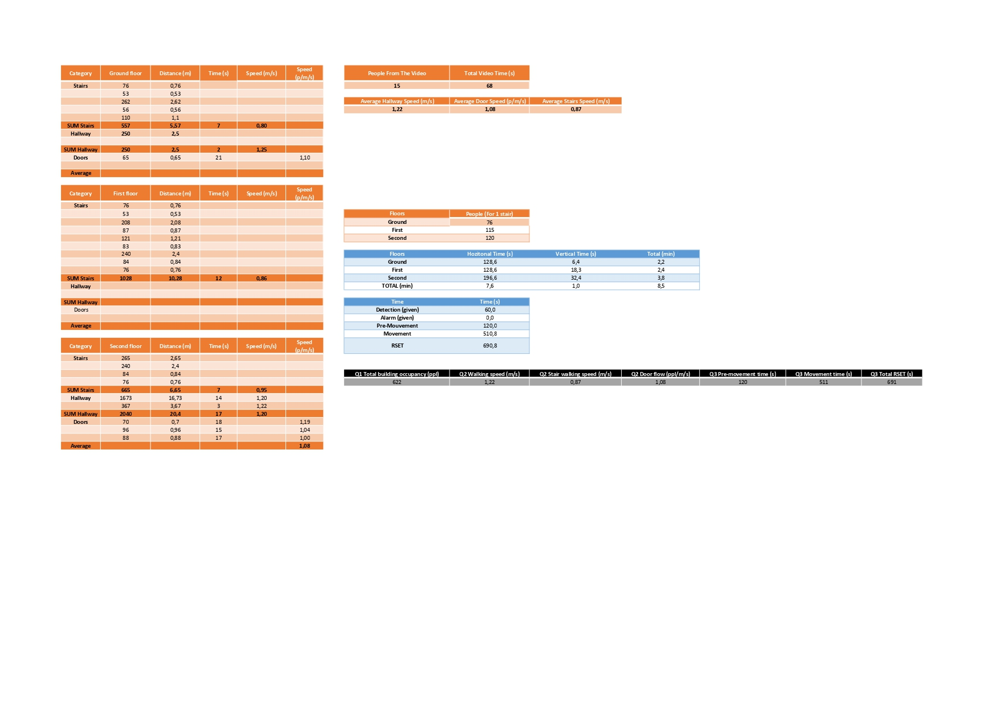

University of Edinburgh
Un semestre complet de génie civil enseigné en anglais à la School of Engineering, sur le campus d'Old College. Cinq modules choisis pour couvrir des domaines que la formation française aborde peu.

Les cinq modules Semestre 2, 2026
Digital Construction 4
Construction numérique et maquette BIM : structuration de la donnée, coordination des modèles et usages du numérique sur le cycle de vie d'un ouvrage. Le module qui prolonge le plus directement mon travail sous Revit, et celui qui a confirmé mon orientation.
Fire Safety Engineering 3
Ingénierie de la sécurité incendie : dynamique du feu, évacuation, réaction au feu des matériaux selon EN 13501-1, résistance des structures et cadre réglementaire britannique.
Infrastructure Sensing using Ground Penetrating Radar
Auscultation non destructive au géoradar : principes physiques, protocoles d'acquisition, traitement et interprétation des radargrammes, avec une campagne de terrain sur dalle béton.
Supply Chain Management
Gestion de la chaîne d'approvisionnement : flux, stocks et pilotage des fournisseurs. Un angle rare dans une formation BTP, alors que c'est exactement ce qui fait déraper un planning de chantier.
Sustainable Energy Group Design Project
Projet de conception en énergie durable mené en équipe internationale : cadrage, répartition des tâches, dimensionnement et soutenance commune en anglais.
Travaux rendus En anglais
- Modélisation de l'évacuation d'un bâtiment. Calcul comparé des temps disponibles et nécessaires, avec analyse des marges de sécurité.
- Classement au feu de matériaux selon EN 13501-1. Analyse des essais normalisés et positionnement des produits dans les euroclasses.
- Échauffement d'un profilé acier protégé, calculé en Python. Poteau 254×254UC73 avec 25 mm de Fendolite MII, sous courbe normalisée ISO 834 puis sous un essai réel.
- Étude de séparation entre bâtiments selon BR 187. Méthode des surfaces rayonnantes, puis confrontation au cas Grenfell au regard de l'Approved Document B.
- Campagne géoradar et rapport d'interprétation. Acquisition en maillage sur la dalle du William Rankine Building au GSSI SIR-4000, traitement des signaux, localisation des armatures et des réseaux noyés.
- Projet de groupe en énergie durable. Conception collective, répartition des rôles et soutenance devant les enseignants.
En images ✏️ assets/img/parcours/





Au-delà des cours
Vivre un semestre à l'étranger change plus de choses qu'un relevé de notes. Travailler en équipe avec des étudiants de plusieurs nationalités, rendre des rapports techniques et soutenir en anglais, s'adapter à une pédagogie nettement plus autonome qu'en France : c'est ce que je retiens en premier. Mon TOEIC à 905 sur 990 vient aussi de là.
Ce que j'en retiens
Digital Construction m'a confirmé que le BIM était la voie que je voulais suivre, et le module géoradar m'a appris à douter d'une mesure avant de l'interpréter.